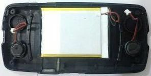
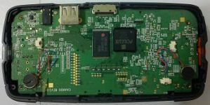

Caanoo掌機具有不錯的手感，加上這一台掌機使用類比搖桿，所以玩格鬥遊戲時，一定要好好握緊主機才可以摳出大絕招，而該主機的喇叭卻是位於背部上方的位置，當雙手握住主機時，手會擋住喇叭的出聲位置，尤其是在玩格鬥遊戲時，聲音竟然會隨著出招而變成大小聲，這樣的現象讓司徒玩起來相當不爽，而之前拆機就發現背部下方是震動器，而上方則是喇叭位置，司徒原本想把喇叭移到正面位置，有點像PSP掌機的形式，只可惜正面已經沒有位置可以安裝，而Caanoo掌機的喇叭也有點大顆，所以只好把震動器跟喇叭對調
對調後，使用三秒膠固定

